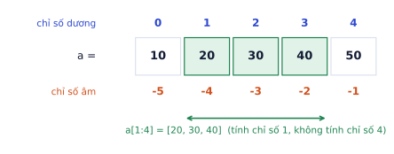

Bài đầu tiên của lộ trình, dành cho người chưa từng lập trình. Bạn sẽ chạy dòng code Python đầu tiên ngay trên trang này, rồi học lần lượt: biến, các kiểu dữ liệu, câu lệnh if, vòng lặp, list, dict, hàm, cách đọc thông báo lỗi, và cách dùng thư viện. Cuối bài là vài cấu trúc gặp ở mọi đoạn code ML. Mỗi khái niệm đều có ví dụ chạy được: hãy bấm Sửa code, đổi vài con số, rồi ▶ Chạy để tự xem chuyện gì xảy ra. Đó là cách học lập trình nhanh nhất.
Chạy Python ở đâu
Vì sao cần học
Python là ngôn ngữ chính của AI: gần như mọi thư viện (numpy, pandas, PyTorch, Hugging Face) và mọi bài báo có code đều dùng Python. Cú pháp Python gần với tiếng Anh, nên người mới đọc được sau vài buổi.
Một chương trình là danh sách câu lệnh, máy chạy lần lượt từ trên xuống. Bạn có ba chỗ để chạy:
Chỗ chạy
Cần cài gì
Dùng khi
Ngay trên trang bài học
không
thử các ví dụ trong bài (nút ▶ Chạy dưới mỗi đoạn code)
Google Colab
chỉ cần tài khoản Google
làm bài thực hành, cần GPU miễn phí (nút COLAB ở cột bên phải)
Máy của bạn (VS Code)
cài Python và VS Code
dự án thật, hướng dẫn ở P0.7
Trên Colab và trang này, code nằm trong các ô. Bấm chạy một ô thì kết quả hiện ngay bên dưới ô đó. Các ô chạy sau nhớ được những gì ô trước đã tạo.
Dòng code đầu tiên:
print("Xin chào, mình đang học Python!")# print in ra màn hình những gì nằm trong ngoặcprint(2+3)
Kết quả khi chạy
Xin chào, mình đang học Python!
5
Mọi thứ sau dấu # là chú thích (comment): máy bỏ qua, chỉ để người đọc hiểu. Chữ đặt trong dấu nháy "..." là chuỗi (văn bản); số thì viết thẳng. Vì vậy print(2 + 3) in ra 5, còn print("2 + 3") in ra nguyên văn 2 + 3.
Biến và kiểu dữ liệu
Biến là một cái tên gắn vào một giá trị, để dùng lại về sau. Dấu = nghĩa là gán: "cho tên bên trái chỉ vào giá trị bên phải", không phải "bằng" như trong toán.
gia=1500# giá một chiếc bàn (nghìn đồng)so_luong=3tong=gia*so_luongprint(tong)so_luong=so_luong+1# lấy giá trị cũ (3) cộng 1, gán lại vào so_luongprint(so_luong)
Kết quả khi chạy
4500
4
Tên biến dùng chữ không dấu, số và dấu gạch dưới, không bắt đầu bằng số, phân biệt hoa thường (gia khác Gia). Nên đặt tên nói lên ý nghĩa: so_luong dễ hiểu hơn x.
print(7+2,7-2,7*2)# cộng, trừ, nhân: 9 5 14print(7/2)# chia: luôn ra số thực 3.5print(7//2)# chia lấy phần nguyên: 3print(7%2)# chia lấy phần dư: 1print(2**10)# lũy thừa: 2 mũ 10 = 1024
Kết quả khi chạy
9 5 14
3.5
3
1
1024
Phép % hay dùng để kiểm tra chẵn lẻ (n % 2 == 0 là số chẵn) hoặc để làm gì đó "mỗi 100 bước" khi train model: if step % 100 == 0: print(loss).
Đổi kiểu và f-string
tuoi="25"# đây là CHUỖI "25", không phải sốprint(int(tuoi)+1)# int(...) đổi chuỗi thành số nguyên: 26print(float("0.5")*2)# float(...) đổi thành số thực: 1.0print(str(42)+" điểm")# str(...) đổi số thành chuỗi để nối: 42 điểmten,diem="Lan",8.456print(f"{ten} được {diem:.1f} điểm")# f-string: chèn biến vào chuỗi, :.1f làm tròn 1 chữ số
Kết quả khi chạy
26
1.0
42 điểm
Lan được 8.5 điểm
f-string (chuỗi có chữ f đứng trước) là cách tiện nhất để in kết quả: mọi thứ trong {...} được tính rồi chèn vào chuỗi. Bạn sẽ dùng nó suốt khi in loss, accuracy: print(f"epoch {epoch}: loss = {loss:.4f}").
Lỗi hay gặp
Cộng chuỗi với số."5" + 5 báo lỗi TypeError, vì Python không tự đoán bạn muốn 10 hay "55". Khi đọc dữ liệu từ file hoặc từ bàn phím (input()), mọi thứ đều là chuỗi, phải đổi bằng int() hoặc float() trước khi tính.
Chuỗi
s="Bàn trang điểm"print(len(s))# số ký tự (tính cả khoảng trắng): 14print(s.upper())# viết hoa: BÀN TRANG ĐIỂMprint(s.replace("Bàn","Ghế"))print(s.split())# tách theo khoảng trắng thành danh sách từprint("trang"ins)# có chứa "trang" không: True
Kết quả khi chạy
14
BÀN TRANG ĐIỂM
Ghế trang điểm
['Bàn', 'trang', 'điểm']
True
Các lệnh viết sau dấu chấm như s.upper() gọi là phương thức (method) của chuỗi. Chúng không sửa s mà trả về một chuỗi mới.
Tự kiểm tra nhanh
So sánh và câu lệnh if
Phép so sánh cho kết quả True hoặc False: == (bằng), != (khác), <, >, <=, >=. Ghép nhiều điều kiện bằng and (và), or (hoặc), not (phủ định).
diem=7.5print(diem>=5,diem==10,diem>=5anddiem<8)
Kết quả khi chạy
True False True
Câu lệnh if chạy một khối code chỉ khi điều kiện đúng:
diem=7.5ifdiem>=8:xep_loai="Giỏi"elifdiem>=6.5:# elif = "nếu không thì, nếu ..."xep_loai="Khá"elifdiem>=5:xep_loai="Trung bình"else:# mọi trường hợp còn lạixep_loai="Yếu"print(xep_loai)
Kết quả khi chạy
Khá
Python kiểm tra từ trên xuống, gặp điều kiện đúng đầu tiên thì chạy khối đó và bỏ qua phần còn lại. Đổi diem thành 9, 5.5, 3 rồi chạy lại để thấy.
Chú ý hai thứ: dấu : ở cuối dòng if, và các dòng bên trong được thụt vào 4 dấu cách. Python dùng thụt đầu dòng để biết dòng nào thuộc khối nào, nên thụt sai là sai chương trình (hoặc báo lỗi IndentationError).
Lỗi hay gặp
Nhầm = với ==.= là gán, == là so sánh. Viết if diem = 10: sẽ báo lỗi cú pháp. Ngược lại, viết diem == 10 trên một dòng riêng (định gán) thì không báo lỗi, chỉ tính ra True/False rồi bỏ đi, và diem không đổi.
List: danh sách
List chứa nhiều giá trị theo thứ tự, viết trong ngoặc vuông. Mỗi phần tử có một chỉ số (index), bắt đầu từ 0. Chỉ số âm đếm từ cuối: -1 là phần tử cuối.

Chỉ số dương đếm từ đầu (bắt đầu từ 0), chỉ số âm đếm từ cuối. Lát cắt a[1:4] lấy từ chỉ số 1 tới trước chỉ số 4.
a=[10,20,30,40,50]print(a[0],a[2],a[-1])# phần tử đầu, thứ ba, cuối: 10 30 50print(a[1:4])# lát cắt (slice) từ chỉ số 1 tới TRƯỚC 4: [20, 30, 40]print(a[:2],a[3:])# bỏ trống = từ đầu / tới cuối: [10, 20] [40, 50]print(len(a),sum(a),max(a),min(a))
Lát cắt a[i:j] lấy từ i tới trướcj, nên có j - i phần tử. Quy tắc "tính đầu, không tính cuối" này giống hệt ở numpy và PyTorch.
List thay đổi được:
gio_hang=["bàn","ghế"]gio_hang.append("gương")# thêm vào cuốigio_hang[0]="bàn trang điểm"# sửa phần tử đầuprint(gio_hang,len(gio_hang))print("ghế"ingio_hang)# kiểm tra có trong list khôngprint(sorted([3,1,2]))# trả về list mới đã sắp xếp: [1, 2, 3]
List có thể chứa list, tạo thành bảng: bang = [[1, 2, 3], [4, 5, 6]], khi đó bang[1][2] là 6 (hàng 1, cột 2). Ở P0.2 bạn sẽ thấy numpy làm việc với bảng số như thế này nhanh và gọn hơn nhiều.
Vòng lặp
for: làm lại với từng phần tử
gia=[1500,450,250]tong=0forgingia:# lần lượt g = 1500, rồi 450, rồi 250tong=tong+gprint("cộng thêm",g,"→ tổng",tong)print("Tổng cuối:",tong)
Kết quả khi chạy
cộng thêm 1500 → tổng 1500
cộng thêm 450 → tổng 1950
cộng thêm 250 → tổng 2200
Tổng cuối: 2200
Khối thụt vào bên dưới for chạy một lần cho mỗi phần tử. Dòng print("Tổng cuối:", ...) không thụt vào nên chỉ chạy một lần, sau khi vòng lặp xong. Mẫu "tạo biến bằng 0, cộng dồn trong vòng lặp" này là cách tính tổng, đếm, tìm max mà bạn sẽ gặp ở mọi nơi.
range(n) tạo dãy số 0, 1, ..., n-1, dùng khi muốn lặp đúng n lần:
foriinrange(3):print("epoch",i)print(list(range(2,10,3)))# range(bắt đầu, kết thúc, bước): [2, 5, 8]
Kết quả khi chạy
epoch 0
epoch 1
epoch 2
[2, 5, 8]
Hai hàm đi kèm for rất hay gặp:
san_pham=["bàn","ghế","gương"]gia=[1500,250,450]fori,spinenumerate(san_pham):# enumerate: lấy kèm số thứ tựprint(i,sp)forsp,ginzip(san_pham,gia):# zip: đi song song hai listprint(f"{sp}: {g} nghìn")
loss=2.0buoc=0whileloss>0.1:# còn lớn hơn 0.1 thì lặp tiếploss=loss/2# mô phỏng: mỗi bước loss giảm một nửabuoc=buoc+1print(f"sau {buoc} bước, loss = {loss}")
Kết quả khi chạy
sau 5 bước, loss = 0.0625
Dùng while khi không biết trước số lần lặp. Nhớ phải có gì đó làm điều kiện đổi dần trong thân vòng lặp, nếu không vòng lặp chạy mãi (trên Colab bấm nút dừng ô để thoát). Trong vòng lặp nào cũng dùng được break (thoát ngay) và continue (bỏ qua phần còn lại, sang lượt sau).
Tự kiểm tra nhanh
Với a = [10, 20, 30, 40, 50]:
Dict: tra cứu theo tên
Dict (từ điển) lưu các cặp khóa → giá trị, viết trong ngoặc nhọn. Thay vì lấy theo vị trí như list, bạn lấy theo khóa:
gia={"bàn":1500,"ghế":250,"gương":450}print(gia["ghế"])# lấy giá trị theo khóa: 250gia["đèn"]=280# thêm cặp mới (hoặc sửa nếu khóa đã có)print(len(gia),"kệ"ingia)# 4 cặp; "kệ" không cóprint(gia.get("kệ",0))# get: trả về 0 nếu không có khóa, thay vì báo lỗiforten,gingia.items():# duyệt từng cặpprint(ten,g)
Kết quả khi chạy
250
4 False
0
bàn 1500
ghế 250
gương 450
đèn 280
Ví dụ kinh điển: đếm số lần mỗi từ xuất hiện.
cau="mèo đuổi chuột chuột chạy mèo đuổi mèo"dem={}fortuincau.split():dem[tu]=dem.get(tu,0)+1# chưa có thì coi là 0, rồi cộng 1print(dem)
Kết quả khi chạy
{'mèo': 3, 'đuổi': 2, 'chuột': 2, 'chạy': 1}
Dict có mặt khắp nơi trong AI: cấu hình train ({"lr": 0.001, "epochs": 10}), bộ từ vựng của model ngôn ngữ (từ → số), và dữ liệu JSON từ API.
Hàm: đặt tên cho một đoạn code
Hàm gói một đoạn code lại, đặt tên, để gọi lại nhiều lần với đầu vào khác nhau. Định nghĩa bằng def, trả kết quả bằng return:
defthanh_tien(gia,so_luong,giam_gia=0):"""Tính tiền một dòng đơn hàng. giam_gia là tỉ lệ, ví dụ 0.1 = giảm 10%."""returngia*so_luong*(1-giam_gia)print(thanh_tien(1500,2))# 3000print(thanh_tien(1500,2,giam_gia=0.1))# 2700.0
Kết quả khi chạy
3000
2700.0
gia, so_luong, giam_gia là tham số: tên đặt cho đầu vào. giam_gia=0 là giá trị mặc định, dùng khi người gọi không truyền vào.
Chuỗi trong ba dấu nháy ngay dưới def là docstring, mô tả hàm làm gì.
return trả kết quả về chỗ gọi và kết thúc hàm.
Một hàm ML thật đầu tiên:
defaccuracy(du_doan,nhan_that):"""Tỉ lệ dự đoán đúng."""dung=0ford,tinzip(du_doan,nhan_that):ifd==t:dung=dung+1returndung/len(nhan_that)print(accuracy([1,0,1,1],[1,1,1,0]))# đúng 2 trên 4: 0.5
Kết quả khi chạy
0.5
Lỗi hay gặp
print thay cho return. Hàm chỉ print(kết_quả) mà không return thì hiện số lên màn hình nhưng trả về None (giá trị "không có gì"). Khi đó x = ham(...) cho x là None, và x + 1 báo lỗi. Hàm tính toán thì return; chỉ print khi mục đích là hiển thị.
Đọc thông báo lỗi
Lỗi là chuyện hằng ngày, kể cả với người viết code lâu năm. Khi code lỗi, Python in ra một traceback: dấu vết các dòng đang chạy lúc gặp lỗi. Đọc từ dưới lên: dòng cuối nói lỗi gì, dòng ngay trên chỉ chỗ gây lỗi.
Traceback (most recent call last):
File "bai1.py", line 3, in <module>
print(gia[3])
~~~^^^
IndexError: list index out of range
Dòng cuối: IndexError, chỉ số nằm ngoài list. Dòng trên: lỗi ở dòng 3, gia[3]. Nếu gia có 3 phần tử thì chỉ số hợp lệ là 0, 1, 2. Những lỗi người mới hay gặp:
Lỗi
Nghĩa
Thường do
SyntaxError
sai cú pháp
thiếu :, thiếu ngoặc, thiếu nháy
IndentationError
thụt đầu dòng sai
trộn dấu cách và tab, quên thụt sau if/for/def
NameError: name 'x' is not defined
dùng tên chưa có
gõ sai tên, hoặc chưa chạy ô định nghĩa biến
TypeError
sai kiểu
cộng chuỗi với số, gọi hàm thiếu tham số
IndexError
chỉ số ngoài list
nhầm chỉ số bắt đầu từ 1
KeyError
khóa không có trong dict
gõ sai khóa, khác hoa thường
ModuleNotFoundError
chưa cài thư viện
cần pip install tên_thư_viện
Ghi nhớ: gặp lỗi, đọc dòng cuối trước, rồi tìm số dòng gây lỗi. Nếu vẫn không hiểu, chép nguyên dòng cuối lên công cụ tìm kiếm hoặc hỏi AI: gần như chắc chắn đã có người gặp đúng lỗi đó.
Thư viện và import
Python có sẵn nhiều module (gói code viết sẵn). Dùng chúng bằng import:
importmathprint(math.sqrt(16),math.pi)fromrandomimportrandint# chỉ lấy một hàm từ moduleprint(randint(1,6))# tung xúc xắc: số ngẫu nhiên từ 1 tới 6importstatisticsasst# đặt tên ngắn để gõ cho nhanhprint(st.mean([7,8,9]))
Kết quả khi chạy
4.0 3.141592653589793
4
8
Các thư viện ngoài (numpy, pandas, PyTorch) phải cài trước bằng lệnh pip install numpy trong terminal, hoặc !pip install numpy trong ô Colab. Colab và trang này đã cài sẵn những thư viện chính. Cách viết import numpy as np ở P0.2 là cùng kiểu với import statistics as st ở trên: cả cộng đồng đều dùng tên ngắn np, pd, plt, nên bạn sẽ thấy chúng ở mọi đoạn code.
Môi trường ảo
Trên máy của bạn, mỗi dự án nên có môi trường ảo riêng, để phiên bản thư viện của dự án này không phá dự án khác. Bạn chưa cần làm bước này cho tới khi cài Python lên máy (P0.7):
python-mvenv.venv# tạosource.venv/bin/activate# kích hoạt (Windows: .venv\Scripts\activate)
pipinstallnumpypandasmatplotlib
pipfreeze>requirements.txt# ghi lại phiên bản để người khác cài đúng
Những cấu trúc gặp nhiều trong code ML
Vì sao cần học
Đọc code ML, bạn sẽ gặp đi gặp lại một vài cách viết gọn hơn những gì ở trên. Chúng không làm được gì mới, chỉ ngắn hơn. Đọc hiểu được chúng thì bạn đọc được code PyTorch hay Hugging Face mà không bị khựng.
Comprehension: tạo list và dict trong một dòng
Comprehension là cách viết gọn của vòng for khi mục đích là tạo ra một list mới. Hai cách dưới cho cùng kết quả:
binh_phuong=[]forxinrange(5):binh_phuong.append(x*x)print(binh_phuong)print([x*xforxinrange(5)])# cùng kết quả, một dòngprint([xforxinrange(10)ifx%2==0])# có điều kiện lọc: số chẵnprint({w:len(w)forwin["mèo","chó","gà"]})# dict comprehension
Đọc từ trái sang phải: "lấy x * x, với mỗi x trong range(5)". Khi vòng lặp có nhiều bước phức tạp, cứ viết for bình thường cho dễ đọc.
sorted, max, min với key
words=["mèo","chó","gà","vịt"]print(sorted(words,key=len))# sắp theo độ dàidiem={"Lan":8.5,"Minh":9.1,"Hoa":7.8}print(max(diem,key=diem.get))# người điểm cao nhất
Kết quả khi chạy
['gà', 'mèo', 'chó', 'vịt']
Minh
key= nhận một hàm, dùng để so sánh thay cho chính giá trị: key=len so theo độ dài, key=diem.get so theo điểm của từng tên. Rất hay dùng để lấy "phần tử có điểm cao nhất".
Class: tự tạo một kiểu dữ liệu
Class là cái khuôn để tạo ra các đối tượng có dữ liệu riêng và hàm riêng (gọi là phương thức). Bạn sẽ viết class nhiều nhất khi tạo bộ dữ liệu và model trong PyTorch:
classDataset:# đúng khung mà torch.utils.data.Dataset yêu cầudef__init__(self,rows):# chạy khi tạo đối tượng: lưu dữ liệu vào selfself.rows=rowsdef__len__(self):# len(ds) gọi hàm nàyreturnlen(self.rows)def__getitem__(self,i):# ds[i] gọi hàm nàyreturnself.rows[i]ds=Dataset(["a","b","c"])print(len(ds),ds[1])# 3 b
Kết quả khi chạy
3 b
self là chính đối tượng đang được dùng; self.rows là dữ liệu nó mang theo. Các hàm có hai dấu gạch dưới hai đầu (__init__, __len__, __getitem__) là dunder method: Python tự gọi chúng khi bạn tạo đối tượng, dùng len(...) hay [...]. PyTorch dựa vào đúng cơ chế này để lấy dữ liệu theo batch (P0.6).
Lỗi hay gặp
Giá trị mặc định là list. Đối số mặc định chỉ được tạo một lần khi định nghĩa hàm, nên các lần gọi dùng chung một list:
defadd_item(x,bag=[]):bag.append(x)returnbagprint(add_item(1))# [1]print(add_item(2))# [1, 2] ← không phải [2]
Kết quả khi chạy
[1]
[1, 2]
Cách đúng: def add_item(x, bag=None): rồi bag = [] if bag is None else bag.
Tóm tắt bài và thuật ngữ
Chủ đề
Điều cần nhớ
Ví dụ
Biến, kiểu
= là gán; int, float, str, bool; đổi kiểu trước khi tính
int("25") + 1
Phép tính
/ ra số thực, // phần nguyên, % phần dư, ** lũy thừa
7 // 2, 7 % 2
if
gặp điều kiện đúng đầu tiên thì dừng; : và thụt 4 cách
if a: ... elif b: ... else: ...
List
chỉ số từ 0, -1 là cuối; lát cắt tính đầu không tính cuối
a[1:4], a.append(x)
Vòng lặp
for khi biết trước tập phần tử, while khi chờ điều kiện
for i, x in enumerate(a)
Dict
tra theo khóa
d.get(k, 0), d.items()
Hàm
def, tham số, giá trị mặc định, return
def f(x, y=1): return x + y
Lỗi
đọc dòng cuối của traceback trước
IndexError, KeyError
Code ML
comprehension, key=, class có __len__/__getitem__
[f(x) for x in xs]
Thuật ngữ
Nghĩa
variable
biến: tên gắn vào một giá trị
int / float / str / bool
số nguyên / số thực / chuỗi / đúng-sai
list / dict
danh sách theo thứ tự / bảng tra khóa → giá trị
index / slice
chỉ số / lát cắt một đoạn
loop
vòng lặp (for, while)
function / parameter / return
hàm / tham số / trả kết quả
method
hàm gắn với một đối tượng, gọi bằng dấu chấm: s.upper()
traceback
dấu vết lỗi Python in ra
module / import
gói code viết sẵn / lệnh nạp nó
comprehension
cách viết gọn vòng for để tạo list, dict mới
class / object
khuôn / đối tượng tạo từ khuôn
dunder method
hàm như __len__, __getitem__ mà Python tự gọi
virtual environment (venv)
môi trường Python riêng cho từng dự án
Làm các bài tính tay bằng giấy bút trước, rồi chép code vào ô bất kỳ trên trang (hoặc Colab) để kiểm tra.
x = 10 * 2 + 1 = 21 (nhân trước cộng sau, như toán). 21 // 4 = 5 vì 4 × 5 = 20, dư 21 % 4 = 1. "AI Engineer" có 2 + 1 + 8 = 11 ký tự, tính cả dấu cách.
Bài 2
Chỉ số và lát cắt
tính tay
nhiet_do = [28, 31, 33, 30, 27, 25, 29] là nhiệt độ 7 ngày trong tuần.
Gợi ý
Chỉ số bắt đầu từ 0, nên nhiet_do[3] là phần tử thứ tư. [2:5] lấy chỉ số 2, 3, 4.
Lời giải
nhiet_do[3] = 30, nhiet_do[-1] = 29 (cuối list). nhiet_do[2:5] = [33, 30, 27] có 3 phần tử. nhiet_do[:3] = [28, 31, 33], lớn nhất là 33.
Bài 3
Xếp loại học lực
code
Viết hàm xep_loai(diem) trả về "Giỏi" nếu điểm từ 8 trở lên, "Khá" từ 6,5, "Trung bình" từ 5, còn lại "Yếu". Sau đó dùng vòng for in xếp loại cho cả lớp, và đếm mỗi loại có bao nhiêu bạn bằng một dict.
Cho danh sách đơn hàng, mỗi đơn là một dict. Viết code tính: tổng doanh thu (giá × số lượng), đơn có giá trị lớn nhất, và doanh thu theo từng sản phẩm.
Duyệt for d in don_hang:, tính tien = d["gia"] * d["sl"]. Cộng dồn vào biến tổng và vào dict theo d["sp"]. Đơn lớn nhất: max(don_hang, key=lambda d: d["gia"] * d["sl"]), trong đó lambda d: ... là cách viết một hàm ngắn ngay tại chỗ.
Code tham khảo
don_hang=[{"sp":"bàn","gia":1500,"sl":2},{"sp":"gương","gia":450,"sl":1},{"sp":"bàn","gia":1500,"sl":1},{"sp":"ghế","gia":250,"sl":4},]tong=0theo_sp={}fordindon_hang:tien=d["gia"]*d["sl"]tong=tong+tientheo_sp[d["sp"]]=theo_sp.get(d["sp"],0)+tienlon_nhat=max(don_hang,key=lambdad:d["gia"]*d["sl"])print("tổng:",tong)print("đơn lớn nhất:",lon_nhat)print("theo sản phẩm:",theo_sp)
Kết quả khi chạy
tổng: 5950
đơn lớn nhất: {'sp': 'bàn', 'gia': 1500, 'sl': 2}
theo sản phẩm: {'bàn': 4500, 'gương': 450, 'ghế': 1000}
Ở P0.3, pandas làm đúng việc này bằng một dòng groupby. Viết tay một lần giúp bạn hiểu dòng đó làm gì bên trong.
Bài 5
Đọc lỗi
khái niệm
Mỗi đoạn dưới báo lỗi gì, và sửa thế nào?
1) gia = [100, 200, 300]
print(gia[3])
2) tuoi = input("Tuổi: ") # người dùng gõ 20
print(tuoi + 1)
3) cau_hinh = {"lr": 0.001}
print(cau_hinh["LR"])
4) for i in range(3)
print(i)
Lời giải
IndexError: list có 3 phần tử, chỉ số hợp lệ 0, 1, 2. Phần tử cuối là gia[2] hoặc gia[-1].
TypeError (cộng chuỗi với số): input() luôn trả về chuỗi. Sửa: int(tuoi) + 1.
KeyError: 'LR': khóa phân biệt hoa thường. Sửa: cau_hinh["lr"], hoặc cau_hinh.get("LR") nếu khóa có thể không có.
SyntaxError: thiếu dấu : sau range(3).
Bài 6
Làm sạch danh bạ khách hàng
ứng dụng
Dùng: chuỗi, phương thức chuỗi, f-string, vòng for, if.
Danh bạ khách hàng nhập tay bị lộn xộn: thừa khoảng trắng, số điện thoại có dấu chấm, dấu cách, có số bắt đầu bằng +84. Hãy chuẩn hóa từng số về dạng 10 chữ số bắt đầu bằng 0, đếm số hợp lệ, rồi in danh sách theo mẫu Lan: 0912345678.
danh_ba=[(" Lan ","0912.345.678"),("minh","+84 987 654 321"),("Hoa","09123"),("TUẤN","0903 111 222"),("an ","+84912000111"),]hop_le=[]forten,soindanh_ba:# TODO: chuẩn hóa tên (bỏ khoảng trắng thừa, viết hoa chữ đầu) và số điện thoại,# rồi thêm (ten, so) vào hop_le nếu số có đúng 10 chữ sốpassprint(hop_le)
Code của bạn
Viết code vào chỗ trống rồi bấm Chạy.
Gợi ý
Tên: ten.strip().title(). Số: bỏ . và dấu cách bằng replace, rồi nếu bắt đầu bằng "+84" thì thay bằng "0" (lát cắt so[3:] bỏ 3 ký tự đầu). Số hợp lệ khi len(so) == 10 và so.isdigit().
Code tham khảo
hop_le=[]forten,soindanh_ba:ten=ten.strip().title()so=so.replace(".","").replace(" ","")ifso.startswith("+84"):so="0"+so[3:]iflen(so)==10andso.isdigit():hop_le.append((ten,so))else:print(f"Bỏ qua {ten}: số '{so}' không hợp lệ")forten,soinhop_le:print(f"{ten}: {so}")
Kết quả khi chạy
Bỏ qua Hoa: số '09123' không hợp lệ
Lan: 0912345678
Minh: 0987654321
Tuấn: 0903111222
An: 0912000111
Bài 7
Bao lâu thì đủ tiền mua laptop
ứng dụng
Dùng: vòng while, phép tính, f-string.
Bạn có 3 triệu đồng, mỗi tháng để dành thêm 2 triệu, và gửi tiết kiệm lãi 0,5% mỗi tháng (lãi tính trên số dư đầu tháng). Laptop giá 25 triệu. Dùng while để tìm số tháng cần, in số dư từng tháng.
so_du=3.0# triệu đồngthang=0# TODO: lặp tới khi so_du >= 25: mỗi tháng cộng lãi 0.5% rồi cộng 2 triệuprint(thang,so_du)
Code của bạn
Viết code vào chỗ trống rồi bấm Chạy.
Gợi ý
Trong thân vòng lặp: so_du = so_du * 1.005 + 2 và thang = thang + 1. Điều kiện lặp là so_du < 25.
tháng 1: 5.01 triệu
tháng 2: 7.04 triệu
tháng 3: 9.08 triệu
tháng 4: 11.12 triệu
tháng 5: 13.18 triệu
tháng 6: 15.24 triệu
tháng 7: 17.32 triệu
tháng 8: 19.40 triệu
tháng 9: 21.50 triệu
tháng 10: 23.61 triệu
tháng 11: 25.73 triệu
Cần 11 tháng
Bài 8
Lọc và xếp hạng sản phẩm
ứng dụng
Dùng: list các dict, comprehension, sorted với key, dict comprehension.
Một shop có danh sách sản phẩm với số đánh giá trung bình và số lượng đã bán. Tìm: (1) tên các sản phẩm có đánh giá từ 4,5 trở lên, (2) 3 sản phẩm bán chạy nhất trong số đó, (3) một dict tên → doanh thu (giá × đã bán) cho mọi sản phẩm.
Bạn chuẩn bị dữ liệu để train một model phân loại cảm xúc. Mỗi đánh giá là một cặp (câu, số sao). Viết class ReviewDataset sao cho ds[i] trả về (câu, nhãn) với nhãn 1 nếu từ 4 sao trở lên, 0 nếu từ 2 sao trở xuống, và bỏ hẳn các đánh giá 3 sao (trung tính) ngay khi tạo. Thêm phương thức dem_nhan() trả về dict nhãn → số câu.
reviews=[("Bàn đẹp, giao nhanh",5),("Gương bị nứt",1),("Tạm được",3),("Rất ưng, sẽ mua lại",4),("Thiếu ốc vít",2),("Bình thường",3),("Đóng gói kỹ",5)]classReviewDataset:def__init__(self,data):# TODO: lưu các cặp (câu, nhãn), bỏ đánh giá 3 saopass
Code của bạn
Viết code vào chỗ trống rồi bấm Chạy.
Gợi ý
Trong __init__, duyệt for cau, sao in data:, dùng continue khi sao == 3, còn lại thêm (cau, 1 if sao >= 4 else 0) vào self.items.
Ở P0.6, chỉ cần thêm (Dataset) sau tên class là DataLoader của PyTorch dùng được ngay class này.
Bài 10
Thống kê điểm thi bằng thư viện có sẵn
ứng dụng
Dùng: import, module statistics và random, hàm.
Dùng random tạo điểm thi ngẫu nhiên (số nguyên 0–10) cho 40 bạn, với random.seed(42) để lần nào chạy cũng ra cùng kết quả. Dùng statistics tính trung bình, trung vị, độ lệch chuẩn, và viết hàm ti_le_dat(diem, nguong) trả về tỉ lệ bạn đạt từ ngưỡng trở lên.
importrandomimportstatisticsasstrandom.seed(42)diem=[random.randint(0,10)for_inrange(40)]# TODO: in trung bình, trung vị, độ lệch chuẩn; viết ti_le_dat
Code của bạn
Viết code vào chỗ trống rồi bấm Chạy.
Gợi ý
st.mean, st.median, st.stdev. Tỉ lệ đạt: đếm sum(1 for d in diem if d >= nguong) rồi chia cho len(diem).
Code tham khảo
defti_le_dat(diem,nguong):returnsum(1fordindiemifd>=nguong)/len(diem)print("trung bình:",st.mean(diem))print("trung vị:",st.median(diem))print("độ lệch chuẩn:",round(st.stdev(diem),2))print("tỉ lệ đạt từ 5:",ti_le_dat(diem,5))
Kết quả khi chạy
trung bình: 4.225
trung vị: 3.0
độ lệch chuẩn: 3.29
tỉ lệ đạt từ 5: 0.4
Đổi random.seed(42) thành số khác rồi chạy lại: các con số đổi theo. Cố định seed là thói quen bắt buộc khi train model, để kết quả chạy lại được.
Sổ chi tiêu bằng Python
Viết một chương trình nhỏ quản lý chi tiêu trong tháng, chỉ dùng những gì trong bài (list, dict, vòng lặp, hàm, f-string). Làm trên Colab hoặc ngay trong ô code trên trang.
Các bước
Tạo list chi_tieu, mỗi khoản là một dict có ngay, muc (ăn uống, đi lại, học tập...), tien (nghìn đồng). Nhập ít nhất 10 khoản.
Viết hàm them(ngay, muc, tien) thêm một khoản vào list. Từ chối (in cảnh báo, không thêm) nếu tien <= 0.
Viết hàm tong_theo_muc() trả về dict mục → tổng tiền.
Viết hàm bao_cao() in: tổng chi, chi theo từng mục kèm phần trăm (làm tròn 1 chữ số), khoản chi lớn nhất, và cảnh báo nếu một mục vượt 40% tổng.
Gọi bao_cao() và đọc lại kết quả xem có hợp lý không.
Xong khi
Chạy lại từ đầu không lỗi.
Báo cáo in đủ 4 phần, phần trăm các mục cộng lại xấp xỉ 100%.
Thử them("05/11", "ăn uống", -20) thì bị từ chối.
Code tham khảo
chi_tieu=[{"ngay":"01/11","muc":"ăn uống","tien":45},{"ngay":"01/11","muc":"đi lại","tien":20},{"ngay":"02/11","muc":"học tập","tien":150},{"ngay":"02/11","muc":"ăn uống","tien":60},{"ngay":"03/11","muc":"giải trí","tien":90},{"ngay":"03/11","muc":"ăn uống","tien":35},{"ngay":"04/11","muc":"đi lại","tien":25},{"ngay":"04/11","muc":"ăn uống","tien":50},{"ngay":"05/11","muc":"học tập","tien":80},{"ngay":"05/11","muc":"ăn uống","tien":40},]defthem(ngay,muc,tien):iftien<=0:print(f"Bỏ qua: số tiền phải dương, nhận được {tien}")returnchi_tieu.append({"ngay":ngay,"muc":muc,"tien":tien})deftong_theo_muc():kq={}forkinchi_tieu:kq[k["muc"]]=kq.get(k["muc"],0)+k["tien"]returnkqdefbao_cao():tong=sum(k["tien"]forkinchi_tieu)print(f"Tổng chi: {tong} nghìn đồng")formuc,tieninsorted(tong_theo_muc().items(),key=lambdap:-p[1]):pct=tien/tong*100canh_bao=" ← vượt 40%!"ifpct>40else""print(f" {muc:<10}{tien:>5}{pct:5.1f}%{canh_bao}")lon=max(chi_tieu,key=lambdak:k["tien"])print(f"Khoản lớn nhất: {lon['tien']} ({lon['muc']}, ngày {lon['ngay']})")them("05/11","ăn uống",-20)them("06/11","đi lại",30)bao_cao()
Xong bài khiChương trình chạy lại từ đầu không lỗi, và bạn tự đọc được dòng cuối của một thông báo lỗi để sửa.